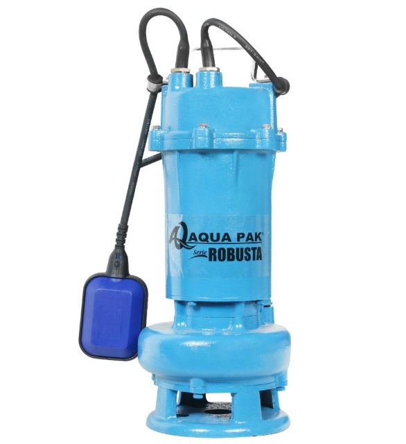

BOMBAS
Motobomba sumergible de 1 HP en hierro para aguas negras
Esta motobomba sumergible de 1HP en hierro es perfecta para el manejo de aguas negras, ofreciendo gran durabilidad y alto rendimiento en condiciones exigentes.
Ideal para proyectos en los que se requiere una solución eficiente para el bombeo de aguas residuales.